Langit sore tersenyum mereka padaku
Bibir senja memerah melihatku menahan rindu
Tentang hadirmu yang selalu semu
Kupeluk bayangmu dalam malam yang bisu
Pada debur ombak pantai yang menenangkan
Kugantungkan hatiku pada paku kenangan
Tentang buku bahasa kalbu menyimpan sejuta kerinduan
Dan aku mengeja namamu dalam bahasa kehilangan
Bila esok fajar mengetuk tanpa suara
Izinkan aku untuk tetap tinggal meski sementara
Sebab jatuh hati padamu adalah patah hati yang tak disengaja
Kutemukan diriku hilang, namun masih mencinta
Bertemu denganmu tidak pernah ada dalam rencana
Ketidaksengajaan yang sama sekali tak pernah kutanyakan kepada semesta
Dan aku berusaha mengukir kisah dengan tinta yang paling bercahaya
Walau hanya bisa menatapmu dari balik jendela kata
Kucoba merajut asa dari serpih waktu
Namun yang kudapat luka penuh pilu
Sajak-sajak ini akan tetap berhujan membasahi perjalananku
Sebab patah tak selalu berarti layu, kadang ia mengajarkan hati untuk utuh kembali, perlahan dan
syahdu.
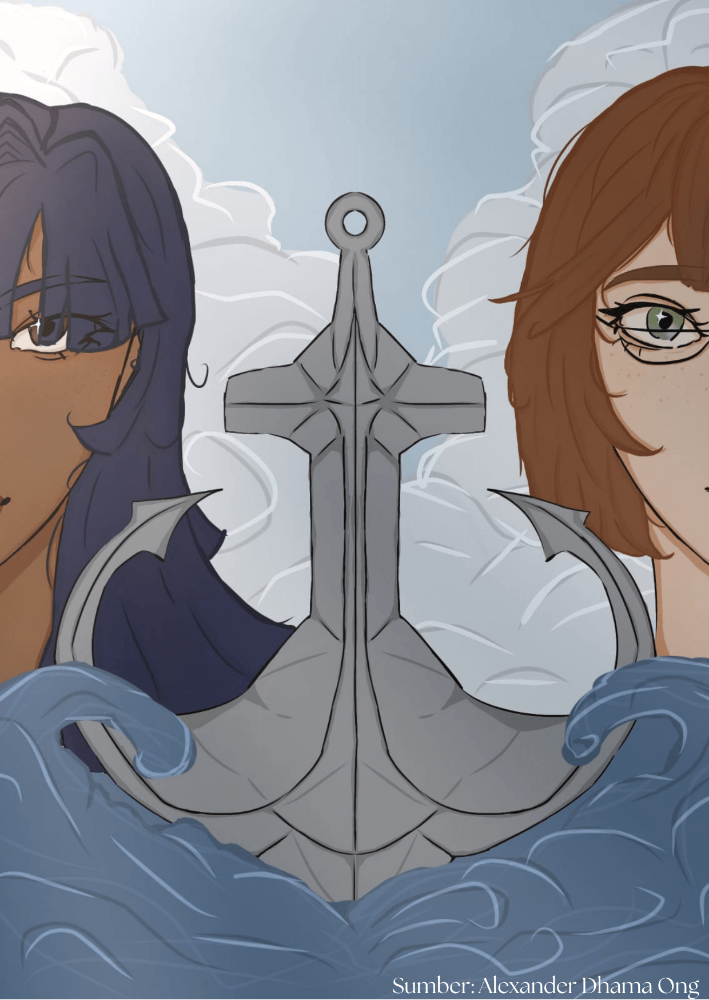
Kau berupa sebuah jangkar Selalu membantuku berdiri Kau menghalangiku dari kenafsuan Kau selalu menjagaku
Seperti kapal di perlautan Beriring melawan pasang dan surut Jangkar menahan segala guncangan Agar hati tetap saling terpaut
Saat adanya badai gelap
Dan ombak menghempas tak kenal lelah
Jangkarlah yang menjaga kita dalam gelap
Menjadi penopang yang tak pernah goyah
Setiap kali dalam kesunyian
Kita tetap setia beriringan
Kau menjadi pegangan
Menjaga langkah tetap sejalan
Hingga senja datang kemari
Dan perjalanan hampir usai
Kau tetap ada sebagai tanda abadi
Selalu membantu aku berdiri
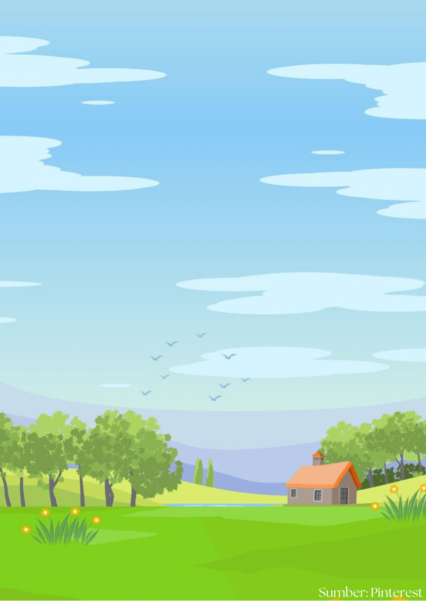
Dibawah atap yang sama kita tumbuh
Berbagi tawa,juga keluh kesah
Keluarga tempat hati berlabuh
Saat lelah dunia terasa berat
Ayah membuat keluarga bersatu
Ibu berdoa tanpa jemu
en
Kasih mereka tulus menyatu
Menjadi cahaya di setiap waktu
Kakak dan adik berbagi barang
Meski kadang berbeda pandang
Dalam salah kita belajar tenang
Arti sabar dan saling sayang
Keluarga bukan tentang sempurna
Namun menerima apa adanya
Saling menguatkan saat terluka
Menemani hingga duka reda
Disanalah cinta bersemi abadi
Tanpa syarat ,tanpa janji
Keluarga adalah harta sejati
Yang selalu hidup di dalam hati
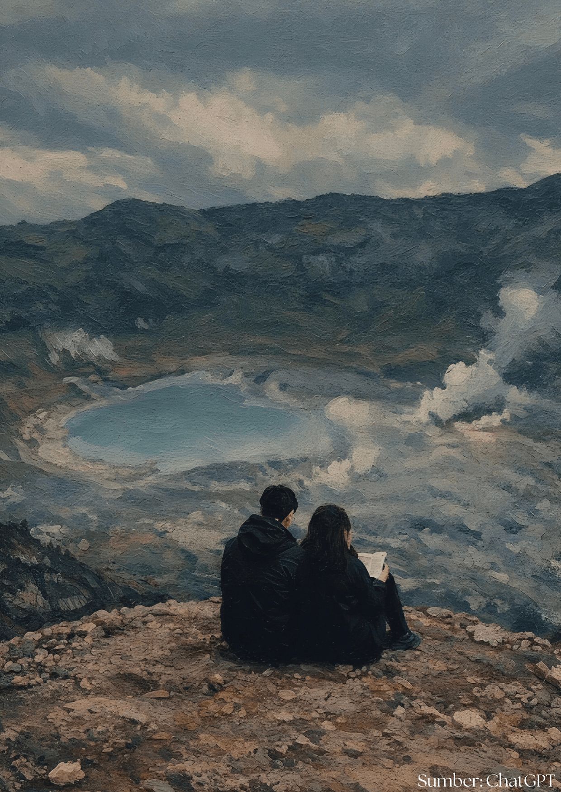
Dalam setiap bait dan sajak
Kau menjelma menjadi tokoh utama
Tak tergantikan oleh siapapun
Diketidak sengajaan aku mengenalmu
Seperti hembusan napas yang tak terhenti
Cintamu terukir di dalam sajakku
Kau adalah tempat imijinasiku bernaung
Setiap langkahku teringat namamu
Matanya yang sendu
Membuat Jiwaku terjatuh dalam hargatnya
Aku mengukir namamu dalam kalimat sederhana
Sajak sajak ini takkan pernan pudar
Setiap kalimat yang kuukir
Namamu selalu muncul di benakku
Seakan-akan lembar sunyi ini tahu
Apa yang sedang aku rasakan
Di setiap perkataan yang tak terucap
Namamu terukir indah dalam sanubariku
Biarkan bibir kawah itu menjadi saksi kisah kita
Agar zaman menyimpan arsa yang kita ukir
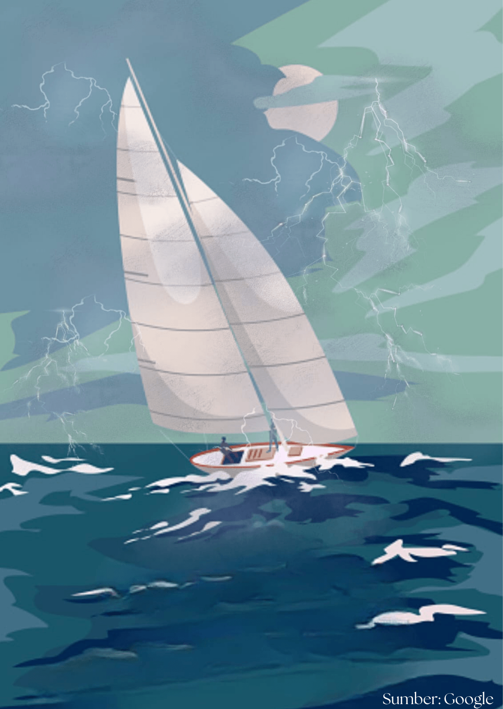
Di tengah pusaran langit yang menghitam
Aku terkurung rapat dalam angin dan hujan
Langkaku hilang arah dan tujuan
Seluruh jalan pulang tertutup air
Bagaikan dinding tinggi yang menjulang
Meninggalkanku sendiri
Aku berteriak pada langit yang bisu
Namun hanya guntur menjawab dengan murka
Tubuh ini goyah, nyaris menyerah
Dihantam badai tanpa jeda
Harapan yang kupunya perlahan hancur
Segala arah tampak gelap dan kabur
Doa-doa tenggelam dalam deras hujan
Tak tahu lagi pada siapa berharap
Namun di balik badai yang mengamuk liar
Kusimpan sisa cahaya yang nyaris padam
Jika malam ini mampu kulewati
Esok, mungkin fajar masih mau menjemputku

Ada apa dengan bumantara yang riuh disana?
Disana ada banyak hewan sedang bernyanyi.
Menjelang fajar embun menyapa,
dedaunan hijau menari sepi.
Sungai mengalir membawa cerita
tentang batu, masa, dan kesabaran.
Burung bernyanyi tanpa nada dusta,
mengajarkan arti kebebasan
Awan-awan bergerak melintasi angkasa
Menjelang senja, awan menutupi bumantara.
Bulan dan lintang amat baswara
Semua insan hadir di dunia
Bianglala berwarna-warni
seperti gula kapas yang indah.
Suara gemercik air sungai,
seperti suara melodi penenang hati.
Setiap elemen alam memiliki khasnya tersendiri,
seperti sidik jari yang unik.
Debur ombak menghilangkan jejak,
ditepian pantai nan sunyi.
Rintik hujan membasahi tanah kering,
membawa kehidupan bagi benih yang pasrah.
Angin berbisik diantara para ranting,
mengajarkan ketenangan saat jiwa lelah.
Adakah pikir yang terlintas di akalmu
Bagaimana diri ini berjuang tanpa teman
Mungkin hidup sekarang terasa lesu
Atau mungkin dengan seorang bisa melawan
Tangan bertaut dalam suka dan lara
Tawa menghapus resah yang membeku
Di kala langkah hampir menyerah
Sahabat hadir memberi waktu yang baru
Tali merah terikat tanpa terlihat
Menghubung jiwa tanpa perlu kata
Meski jarak kadang ikut mendekat
Hati tetap saling menjaga rasa
Jika kelak badai datang menghampiri
Jangan biarkan ikatan ini pudar
Persahabatan kan tetap abadi
Seperti cahaya yang tak pernah gentar
Jikalau duka datang mengunjungi
Harapkan suka menghampiri kemudian
Tanpa melibatkan rasa yang mati
Dengan Jiwa yang tidak sendirian
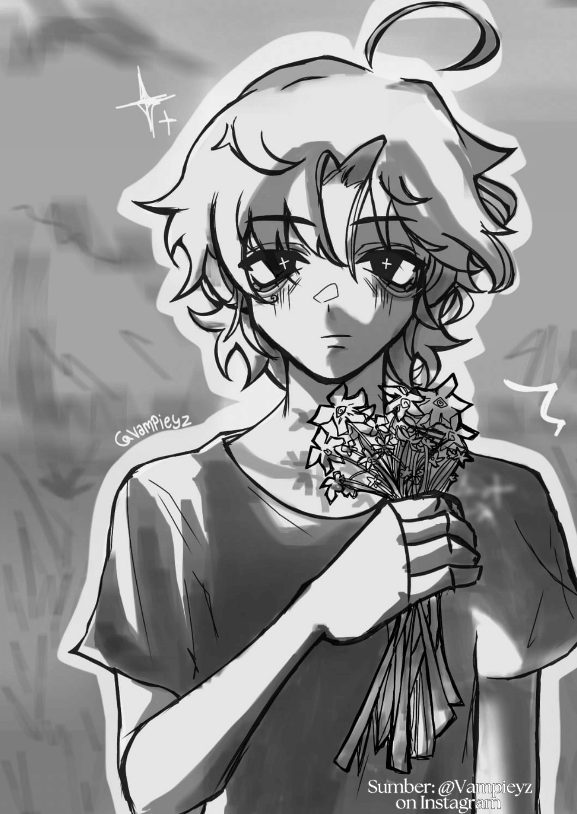
Apakah benar ini, rumah?
Tempat pulang yang katanya paling renjana,
seharusnya menemani langkah ku yang rapuh
Namun sunyi lebih setia.
Meja makan kehilangan cerita,
Dinding-dinding di peluk amarah
.
Nama “keluarga” masih ada,
tapi rasanya tinggal jiwa tanpa rasa kasih
Aku mencari kasih sayang yang abadi
di antara suara yang saling meninggi,
menyusun harapan dari runtuh
yang tak akan kembali utuh.
Lampu masih nyala berseri,
Tapi hangat nya tak pernah sampai
Apakah benar ini,rumah?
Atau tempat untuk aku belajar sendiri.
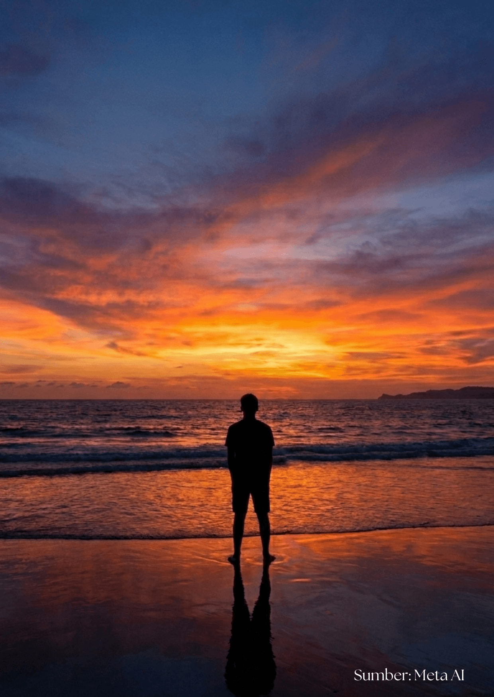
Di antara derap waktu yang berdesir pelan,
Kutemukan senyummu di ujung mentari larut.
Dunia yang kelam sekonyong berubah terang,
Hanya karena langkahmu menghampiri diam-diam.
Matamu adalah samudera tenang nan dalam, Tempatku
mengarungi tanpa rasa takut tenggelam.
Di dalamnya ada bintang, bulan, dan matahari,
Sebuah semesta yang hanya tersedia untuk ku pahami.
Kata-kata kita sering jadi puisi tak terbaca,
Terukir di angin, di daun, di noktah hujan.
Kadang hanya diam yang merajut makna,
Dan hati memahami tanpa perlu suara diterjemahkan.
Bukan tentang genggaman yang tak pernah lepas, Bukan pula
sumpah di bawah gemerlap bintang.
Cinta kita adalah akar yang tumbuh dalam hening, Menopang
setiap dahan harapan dan rindu yang meranting.
Maka izinkan aku mencintaimu dengan sederhana, Seperti laut
mencintai pantai, berjumpa lalu berpisah, Untuk kemudikan rindu
dan kembali berlabuh.
Di dalam gelombang hidup yang tak menentu,
Kaulah pelabuhan terang yang selalu kupeluk dalam doa.
Tuhan engkau pencipta alam semesta
Tempat kami bersyukur atas nikmat yang ada
Dalam setiap langkah hidup manusia
Engkau selalu memberi petunjuk dan cahaya
Ajarkan kami untuk selalu beriman
Bersikap jujur, sabar dan penuh kenaikan
Semoga hidup kami membawa manfaat
Serta di kasihi Mu di dunia akhirat
Di sepertiga malam ak bersujud diam
membawa lelah, dosa dan harapan yang tenggelam Kepada Mu,ku
pasrah kan resah yang dk terucap
Serta Engkau tahu isi hati sebelum bibir menetap
Tuhan, dalam gelap Engkau tetap bercahaya Menuntunku pulang
saat langkah ku tersesat Jika hidup ini ujian dan doa adalah ujiannya
Maka biarlah iman ku setia hingga akhir akhirat
Terimalah setiap doa yang ku panjatkan Meski
sering lirih dan penuh kekurangan
Bimbing lah aku di setiap persimpangan-persimpangan
Agar hidup ku berakhir dalam kasih Mu, Tuhan.
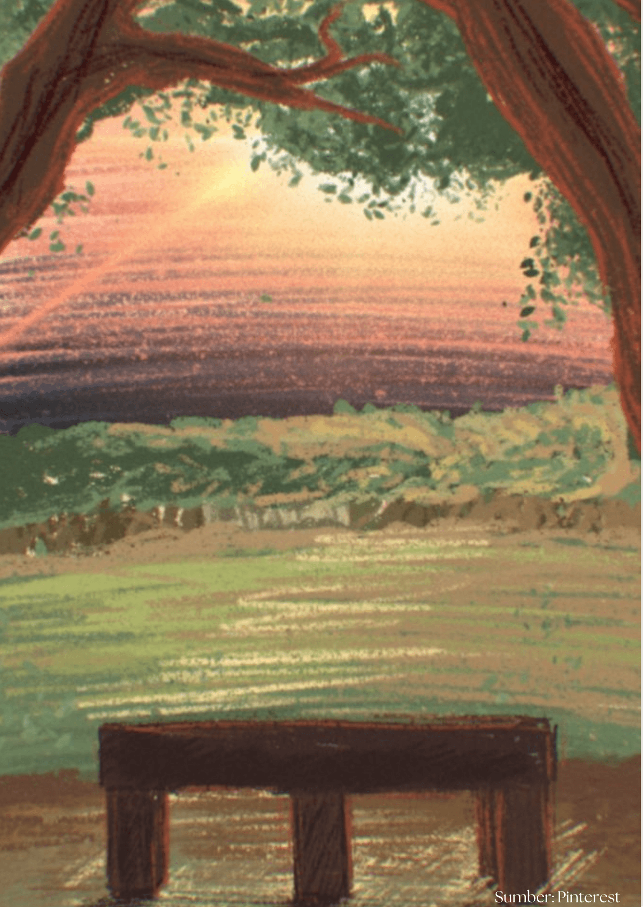
Alam yang begitu indah menyapa.
Memberi ketenangan bagi jiwa
Hembusan angin terasa nyata
Menenangkan hati yang sempat terluka
Dibawah rindangnya pepohonan
Kicauan burung mengisi pagi
Daun menari yang tertiup oleh hembus
Menyambut mentari yang berseri
Langit biru yang terbentang luas
Awan putih bergerak perlahan Cahaya mentari terasa lepas
Menghangatkan bumi dengan penuh keindahan
Sungai mengalir tanpa suara
Air jernih memeluk bebatuan
Mengajarkan arti sabar yang mengalir
dengan ajaran penuh makna.
Dalam perjalanan penuh ketenangan
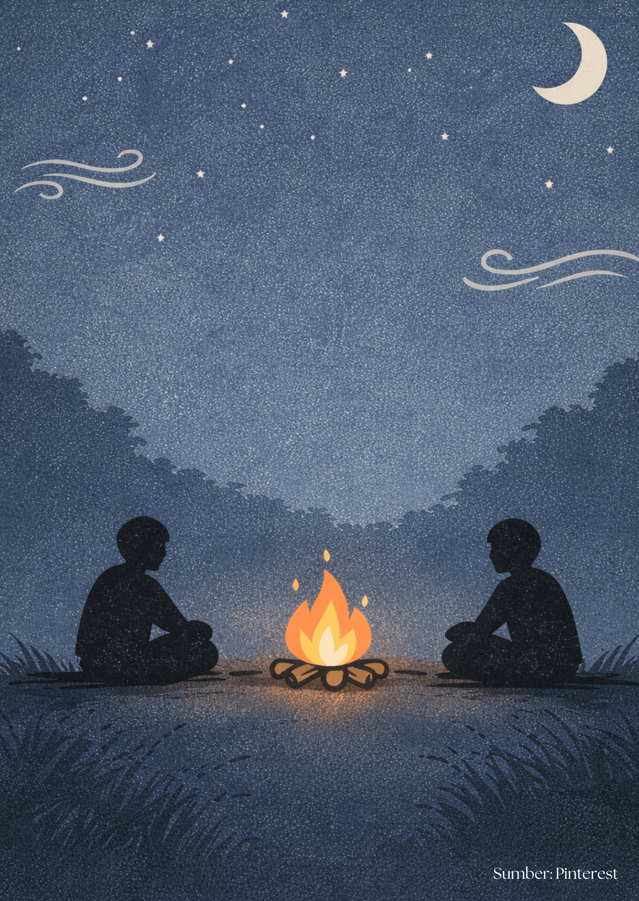
Di tengah dingin yang menerpa
Ada batin yang terus membara
Angin - angin melewati telinganya
Bayangan bahagia tak terlihat menyapa
Namun disisinya ada nyala
Api persahabatan yang tak banyak bicara
la tak mengusir dingin sepenuhnya
Tapi cukup membuat hati bertahan
Dalam sunyi yang menggigit perasaan
Tawa teman jadi kayu bakar harapan
Sedikit cerita, sedikit candaan
Menghangat malam yang hampir padam
Saat langkah terasa berat
Api itu tetap setia menyala
Tak besar, tak pula menyilaukan
Namun hadir, menemani tanpa syarat
Dan kelak saat dingin kembali datang
la tau kemana harus pulang
Pada api di tengah dingin padang
Bernama persahabatan, hangat dan tenang
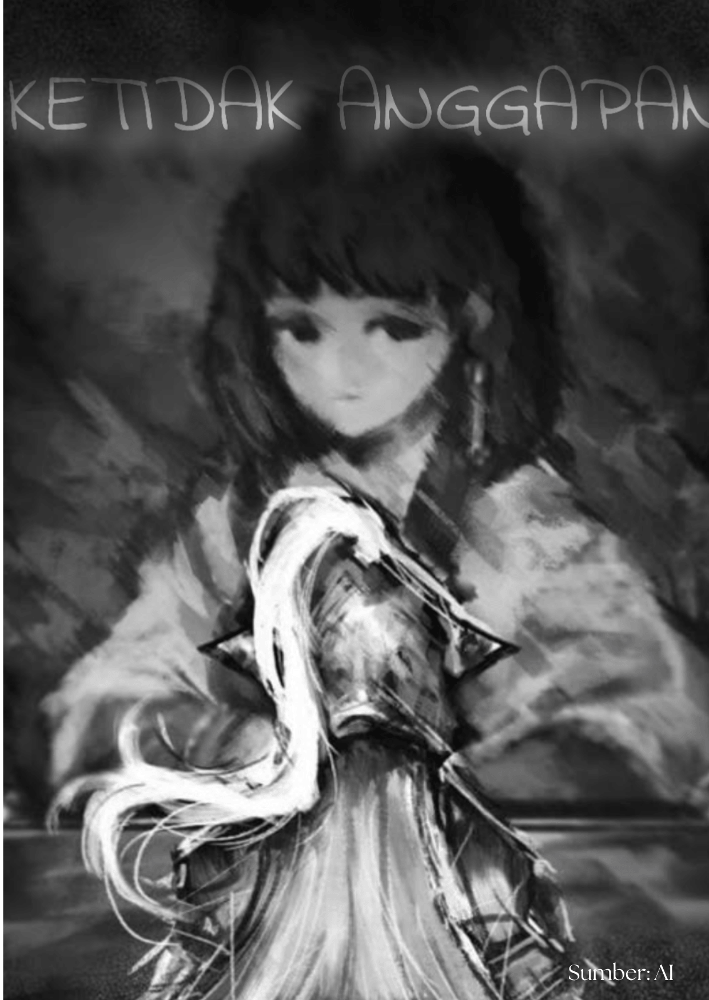
Apa aku masih disini?
Apakah keberadaan ku masih di terdengar?
Jika aku masih di kasihi
Apakah aku sebenarnya didengar?
Kalau tidak menganggapku
Apakah masih bisa disebut kekeluargaan
Mau bagaimana cara ku biar di anggap
Apa yang harus di lakukan
Bagaimana caraku mengubahnya?
Apa yang kurang dari ku?
Seandainya aku bisa mengubahnya
Di mana pada itu kehadiranku
Jiwa raga dan setiap aku
Setiap langkah kaki itu terasah asing
Terasa seperti orang asing
Kesepian ini lebih kurasakan
Dari pada perhatian yang
Bertuju kepada seseorang lebih sempurna
Di matamu ketemukan pagi
hangat menyapa tanpa suara
Senyummu sederhana mampu membuat lelahku luruh
Namun mampu membuat hatiku percaya pada bahagia
Hadirmu menjadi jeda yang paling tenang
Cinta datang tanpa permisi
Seperti hujan di musim yang panjang
Pelan tapi pasti dalam kebersamaan yang tak selalu sempurna
Mengisi ruang kosong diantara dunia yang tak pernah diam
yang lama tak terpenuhi ia tumbuh dari tawa kecil dan cerita sederhana
Bersamamu aku belajar akan banyak hal bahwa rindu tak selalu luka
Ia bisa menjadi doa dimalam yang panjang dan sunyi
Namamu selalu kusebut dalam diam
sambil berharap esok masih menyebut nama kita
Jika jarak dan waktu mencoba menguji rasa
Biarlah keyakinan yang berdiri paling depan
Sebab cinta bukan sekedar tentang bertemu
Melainkan tentang saling menjaga dan percaya
Meski tak selalu bisa saling menggenggam
Bila suatu hari cerita ini berakhir
Aku ingin mengingat luka dan penyesalan
Bahwa pernah ada cinta yang tulus
Mengajarkan ku arti setia dan sabar
Serta indah meski tak harus abadi
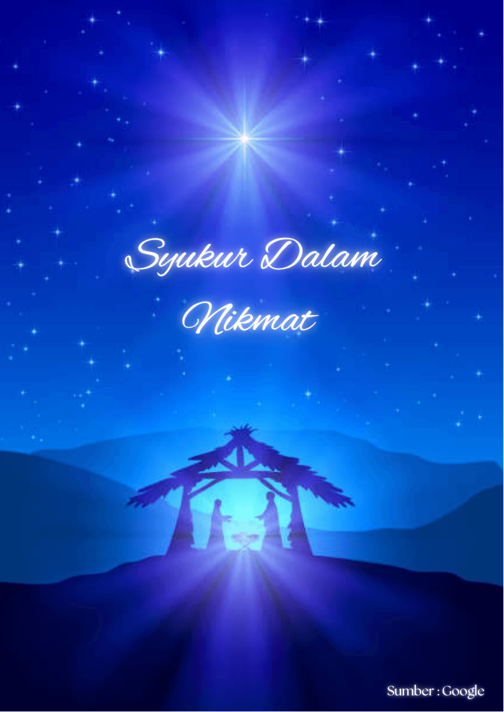
Bukan karena aku kuat, aku dapat berdiri
Tapi karena engkau yang selalu menopang kakiku
Bukan Karena aku pintar aku dapat mengerti
Namun Karena engkau yang membuat aku mengerti.
Terima kasih atas Napas yang selalu berhembus
Untuk Matahari yang menerangi dengan tulus
Pada saat tugas sedang menghimpit pikiranku
Engkau akan datang membantu aku dalam kesempitan itu
Terkadang aku lupa atas Nikmat yang melimpah.
Terserat dengan arus dunia yang menimpah
Namun pintu untuk kembali ke sampingmu selalu berbuka
Namun aku sering melupakan hal yang membuat engkau bahagia
Pada Suatu saat ada pikiran yang terlewat
Apakah engkau akan memberikan hal tersebut tanpa terlewat
Jika iya saya akan sangat bahagia.
Namun jika tidak saya tetap bersedia
Arus dunia sangatlah mengganggu
Menggangu aku untuk berada disamping mu
Semoga arus ini tidak membuatku terganggu
Sehingga aku dapat selalu berada disampingmu
Menggangu aku untuk berada disamping mu
Semoga arus ini tidak membuatku terganggu
Sehingga aku dapat selalu berada disampingmu
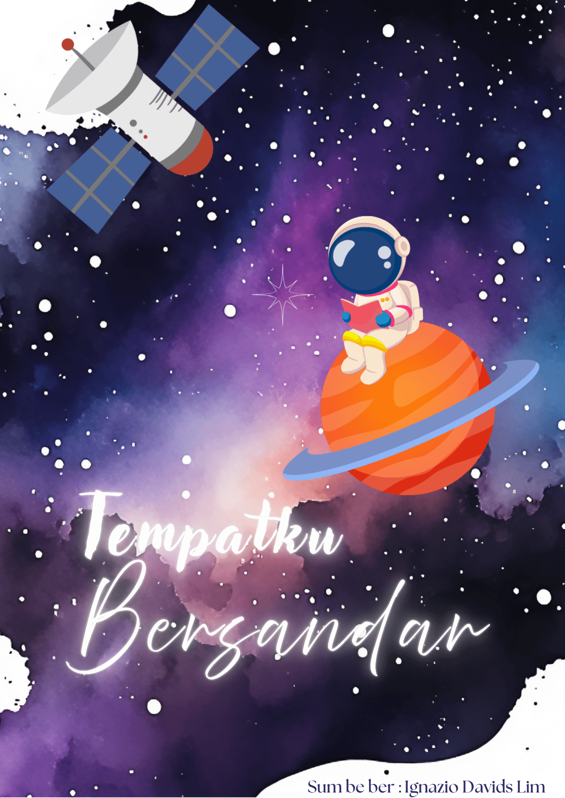
Wahai alam semesta
Kau terbentang dengan luas untuk daku
Kau lah penolong untukku
Engkau tempat bagiku
Kau bagaikan lautan yang hampa
Langit yang tak ada ujungnya
Air yang tak terhitung jumlahnya
Awan diudara melayang entah keman
Cakrawala yang jauh dari mata
Bintang yang tak terhitung jumlahnya
Engkau penyedia bagi daku
Engkau memelihara daku
Asa yang kau dambakan
Tak dapat terwujudkan
Engkau penyelamat bagiku
Engkau hidup dalam kesengsaraanku
Tanah yang engkau sedia
Dapat ku olah dengan adanya
Hembusan angin yang ada
Menjadi penyejuk yang satu-satunya
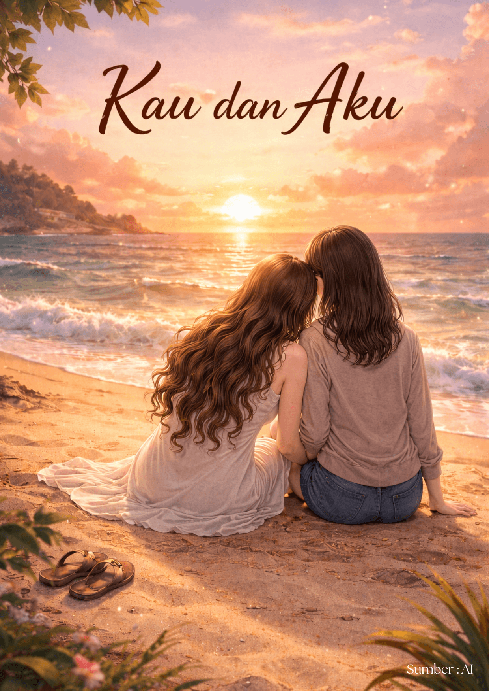
Dua orang yang bersahabat
Peluhnya seorang perempuan itu
Mengalir di balik helai rambutnya yang lebat
Rambut yang panjang dan nan indah dibalik batu
la duduk termenung di tepi pantai
Menatap ombak dengan hati yang sunyi
Langit seolah ikut merasakan sepi
Menyimpan luka yang tak selesai
Aku datang perlahan menghampiri
Tanpa kata, hanya niat yang murni
Kuhadirkan bahu untuk ia sandari
Menjadi tempat aman saat hatinya sepi
Tangisnya jatuh bersama suara laut
Angin berbisik menghapus pilu
Ku peluk erat agar ia tak takut
Mengingatkannya, ia tak sendiri selalu
Senja menyapa dengan warna jingga
Tawa kecil mulai terdengar kembali
Kau dan aku belajar makna setia
Bahwa sahabat takkan pernah pergi
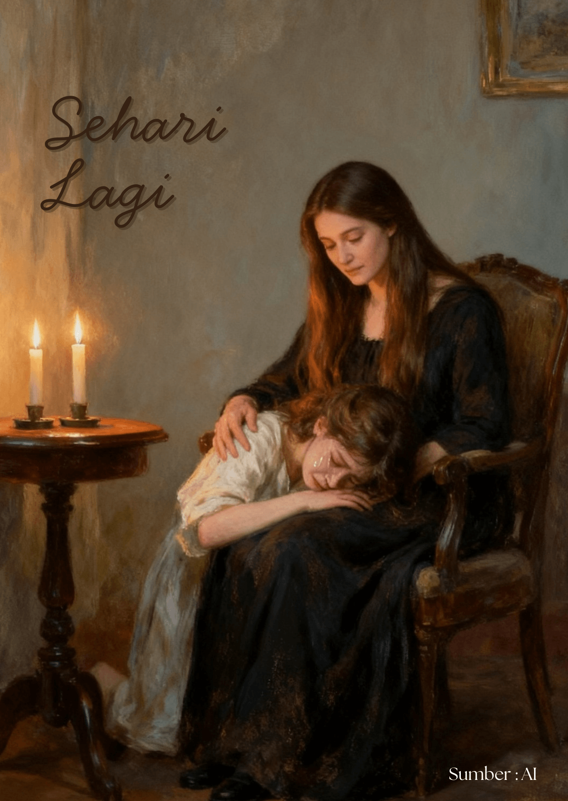
Terkadang saat hidupku putus harapan
Langkahku goyah dilorong keraguan
Namun canda tawamu ibu, setia menyala.
Menjadi bara kecil yang mengajakku bertahan
Hidup sehari lagi, dengan doa yang sederhana
Suaramu lembut ditelingaku
Menenangkan riuh yang berkecamuk dipikiranku
Saat aku terhantam badai terbesar dihidupku
Namamu adalah jangkar, yang menahan perahuku agar tidak karam
Engkau Bagai senja kala aku diliputi sedih
Menghamparkan kehangatan di ufuk timur yang remang.
Mengajarkanku bahwa gelappun tahu kapan pulang
Gelappun tak selalu menang
Meski begitu, aku tak ingin melihatnya berderai air mata
Tak sanggup menyaksikan rapuh diwajahnya
Biarlah Lukaku kubawa diam-diam
Asal senyummu tetap utuh
Sebab Bahagiamu Adalah napasku.
Ibu, hiduplah lebih lama kendati sehari lagi untukku
Temaniku melangkah hingga titik terakhirmu
Kala waktu tiba menagihmu untuk pulang
Langkahmu telah sampai pada penghujung
Biarlah terima kasih ini menjadi bekalmu
Terima kasih ibu.

Kita abadı,
hari itu kusimpan potretmu didinding
menjadikannya berharga untuk dikenang tanpa kusadar,
akhirnya kutemukan harta karun yang sampurna itu.
Ku temukan romeoku
Mencintaimu dari Jauh,
diteluk yang dalam, aku menyembunyikan rindu
diselat yang luas, kau terbebas dariku
kamu memang rumah, tapi aku hanya pengunjung
kamu adalah bintang semesta,
dan aku hanya bintang di dunia kecil ku
Kita manusia fana,
tanan turun bergemutuh
tiba tiba gua kosong dipenuhi kelelawar
perpisahan bukanlah akhir yang kalah
melainkan awal yang akan segera mekar
Selat-Selat abadı,
kamu yang kutemukan hati itu
tak bisa kugenggam abadi
kau memiliki tempat yang kausebut rumah
aku memiliki kau
Aku abadı,
detik diam sebentar
memanggilku tapi dengan senandung gitar
di hamparan yang luas
ada satu diantara jutaan diriku
jutaan aku diantara satu kamu
Tak ada yang abadı
cinta itu alam
perpisahan kita yang tidak
aku menanti mu kembali
kau menyambutku nanti
dısını aku merelakanmu lagı, lagi dan lagi
Aku abadı,
detik diam sebentar
memanggilku tapi dengan senandung gitar
di hamparan yang luas
ada satu diantara jutaan diriku
jutaan aku diantara satu kamu
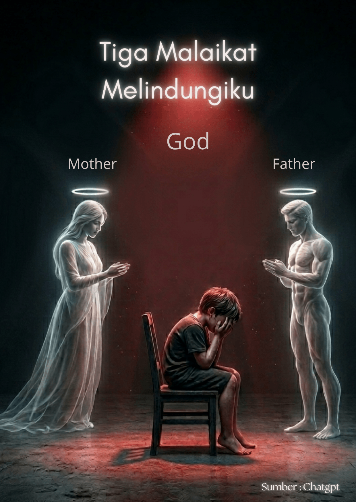
Tuhan,tolong kuatkan aku
Aku mengalami kerasnya hidupku
Hingga rasanya aku berada dipinggir jurang
Rasanya seperti tubuh yang tidak memiliki jantung
Hanya ada tiga malaikat disampingku
Yaitu tuhan,ayah,ibu sebagai pilar hidupku
Mereka penyemangat hidup dan penjaga alam fana
Tanpa mereka jiwaku ini hanya terasa hampa
Aku,hanya sebuah buku
Lalu tuhan menuliskan kisahku
Dan orang tuaku menuliskan nama
Sehingga aku menjadi buku yang sempurna
Setiap tarikan napas,setiap denyut nadi
Aku merasakan rasa yang murni
Bukan karena benteng kokoh diluar sana
Tetapi karena malaikat yang selalu disampingku,setia
Rasa syukur yang mengalir seperti sungai
Atas jasa yang tulus yang abadi
Dikehidupan yang begitu indah ini
Semoga takdir akan membalas budi
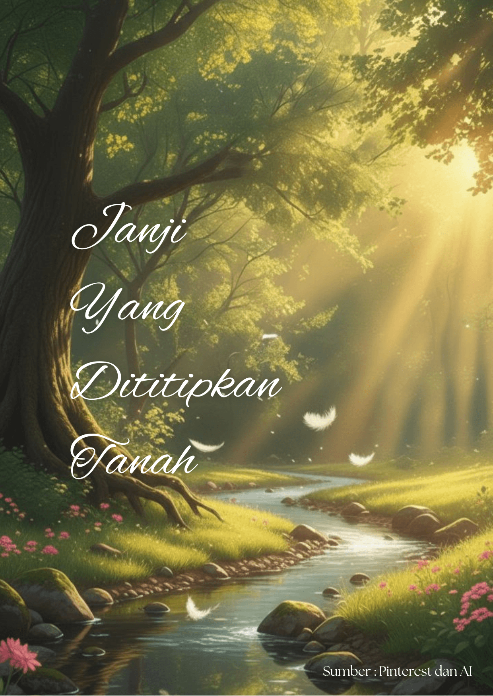
Pagi membuka tirainya dengan perlahan,
Mentari tersenyum dibalik awan,
Embun menari diujung dedaunan,
Menyapa bumi dengan ketenangan.
Angin berbisik diantara pepohonan
menyampaikan rahasia hutan yang damai,
Daun gugur jatuh tanpa keluhan,
Mengajarkan ikhlas dalam setiap sampai.
Sungai mengalir menuju laut,
Membawa cerita dari hulu ke hilir.
Batu dan pasir setia dalam kabut,
Tak lelah menemani perjalanan panjangnya mengalir.
Langit biru membentang luas
awan bergerak seperti mimpi,
burung-burung terbang bebas,
menyuarakan arti hidup yang sejati.
Wahai manusia, dengarkan alam,
Ia berbicara lewat keindahan dan luka,
Jika kita menjaganya dengan kesadaran,
alam pun akan menjaga kita selamanya.
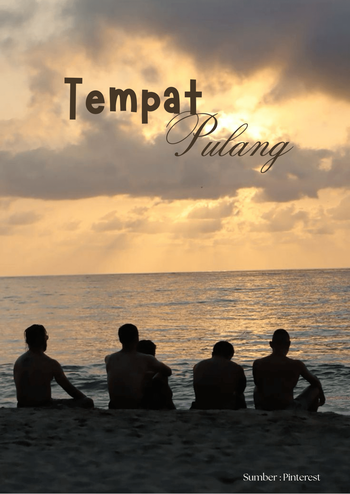
Persahabatan bukan soal tawa yang ramai
Melainkan bertahan saat sunyi menyapa
Ia tetap tinggal walau hati letih dan sepi
Menjadi cahaya kecil di gelapnya dunia
Ia hadir tanpa janji yang diucapkan
Namun setia tanpa diminta
Hadir menjadi rumah yang menenangkan
Ketika dunia asing dan sirna
Meski waktu mengubah jarak dan langkah kita
Meski kita hilang ditelan zaman
Namun kenangan tetap setia menjaga
Karena persahabatan tak akan tergantikan
Persahabatan terbaik
Lahir tanpa rencana
Tumbuh dari hari-hari terbaik
Yang akan kita rindukan selamanya
Jika suatu hari kita berpisah
Biarlah doa tetap berjalan bersama
Karena persahabatan sejati tak punah
Ia tinggal selamanya sebagai rumah jiwa
Seperti itulah persahabatan terbaik
Ia lahir tanpa rencana
Tumbuh dari hari-hari terbaik
Yang akan kita rindukan selamanya
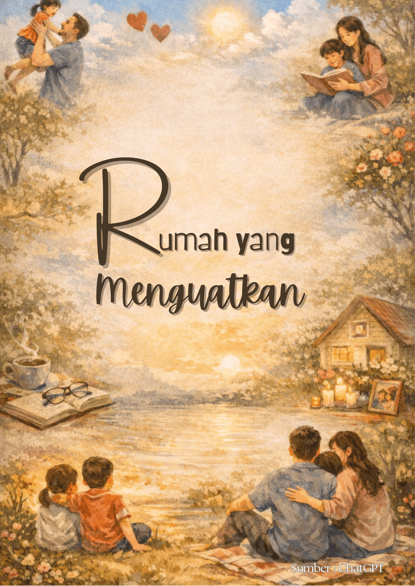
Ayah ibu selalu ada
Menjaga kami setiap masa
Dengan kasih dan penuh cinta
Keluarga jadi harta berharga
Ayah bekerja dengan doa di dada
Ibu merawat dengan cinta tak bersyarat
Setiap nasihat adalah cahaya
Menuntun langkah di hidup yang berat
Saudara teman bermain
Tertawa bersama hingga senja
Jika sedih kami saling menguatkan
Karena bersama kita kuat selamanya
Di rumah kami berkumpul
Berbagi cerita dan juga tawa
Walau hidup tak selalu mudah
Kebersamaan membuat hati bahagia
Keluarga bukan sekedar nama
Tapi lautan hati yang setia
Dalam susah maupun bahagia
Kita kuat karena bersama
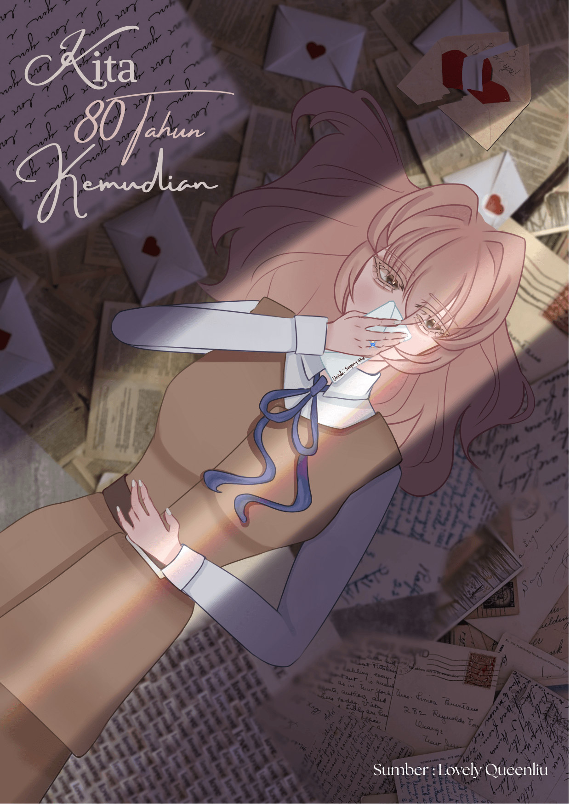
Puisi ini takkan ku mulai dengan kata bahagia
Dikhianati diriku ini terasa sia-sia
Wajah yang monoton, rahang ikut menegang
Tiada rasa tinggal diam di ruang yang lengang
Surat yang tertuju untukmu, dengan harap kau tak membenciku
Pertunangan yang hampa, sunyi menyelimutiku
Kisah cinta yang sarat deraian air mata
Cincin yang memenjarakan kita berdua
Langit senja hangat kini menyapa
Tahun ke tahun kita jalani bersama
Entah kenapa, hangatmu kala ini bertebar
Hitamnya hati pun pudar
Namun dentum senapan memanggil namamu pergi
Seragam menggantikan janji
Langkahmu menjauh ke medan yang tak kukenal
Doaku tertinggal di ambang malam
Akan tetapi aku berpindah rumah, membawa luka dan harap
Alamat lama kau tetap kau tulis lengkap
Kusangka cintamu gugur di perjalanan
Tak lagi ada surat, hanya penantian
Delapan puluh tahun berlalu, sunyi membuka rahasia
Namamu gugur bersama berita lama
Di rumah itu, segunung kertas kutemukan
Cintamu tak pernah pergi—hanya tak sempat sampai tujuan
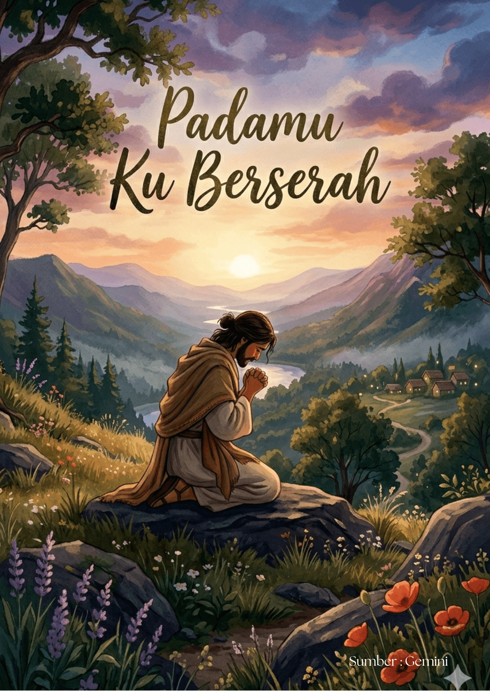
Saat hidup tak baik-baik saja
Ku tak lupa untuk pejamkan mata
Di dalam keheningan kuberdoa
Ku serahkan pada pengaturannya
Ketika lelah mulai terasa
Dan hati dipenuhi tanya
Kuingat Engkau selalu ada
Mendengar doa-doaku saja
Tak semua berjalan sesuai mau
Namun ku belajar untuk tetap tenang
Karena ku tahu di setiap waktu
Engkau menuntunku perlahan
Aku tak kuat bila sendiri
Namun bersamamu ku berani
Kupercaya setiap yang terjadi
Adalah jalan terbaik bagiku nanti
Padamu Tuhan ku berserah
Menitipkan harap dan resah
Dengan doa dan hati yang pasrah
Ku jalani hidup dengan lebih tabah
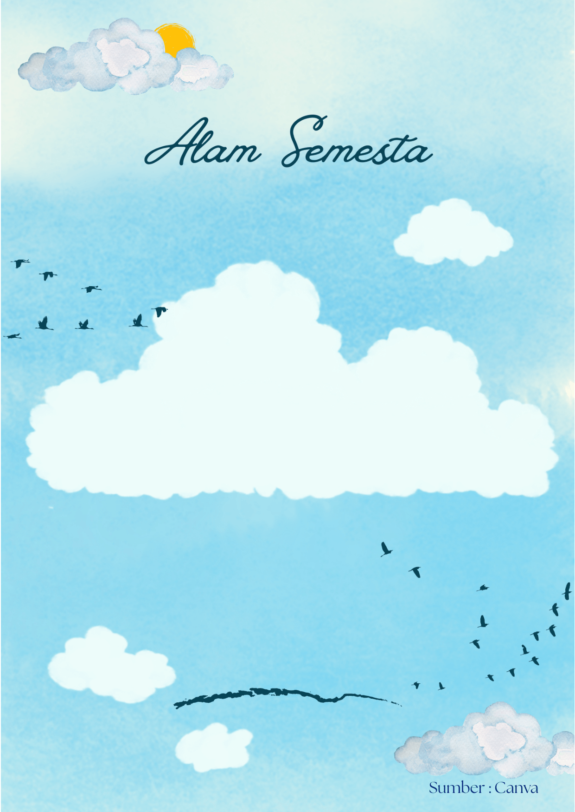
Di lautan biru yang tak bertepi,
Bintang berkelap-kelip menari
Bulan bersinar diufuk sepi
Menyapa alam semesta yang berseri
Planet beredar dalam orbitnya
Bumi pun berputar mengelilingi matahari
Memberikan keindahan di alamnya
Lalu mengukir kisah alam semesta tak terperi
Oh alam semesta, pesonamu tak pernah pudar
Keelokanmu disetiap sudut tak terkira
Hati ini terhanyut dengan penuh rasa sadar
Dengan pancaran indahmu yang beraura
Seketika terdengar suara angin berhembus segar,
Menyentuh telinga dengan lembutnya
Hatiku terasa mekar
Terenyuh akan kesejukkannya
Betapa bersyukurnya hidup di dunia ini
Menikmati alam semesta yang begitu indah
Hidup terasa berwarna warni
Dengan pemandangan alam yang sangat cerah
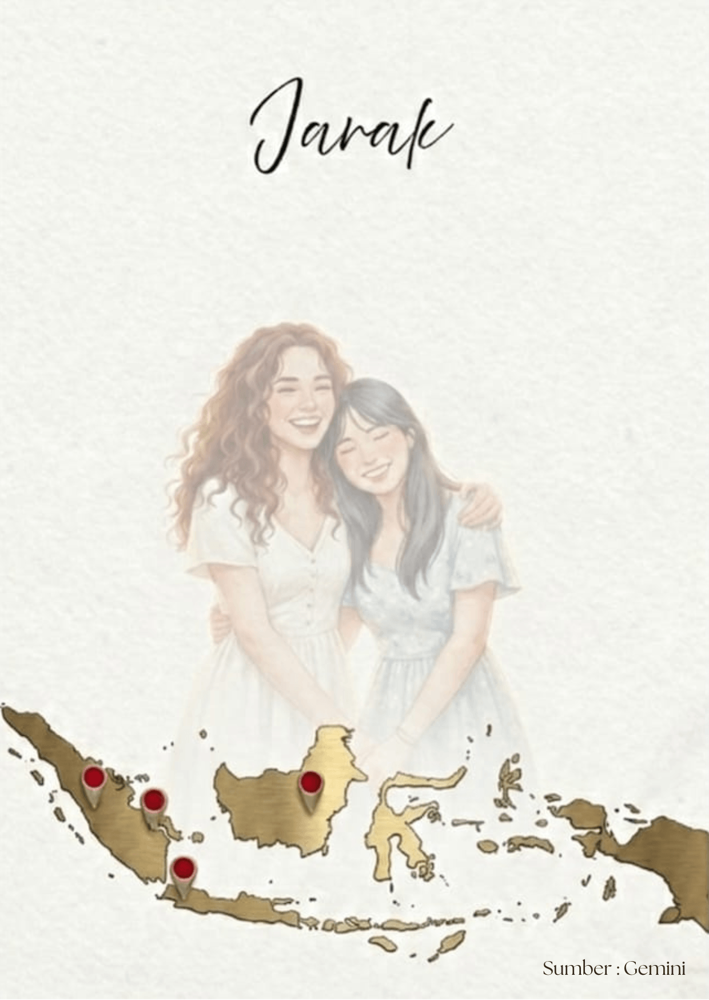
Kehidupan berlalu dengan rasa hampa
Kampung halaman bisa tak bermakna
Waktu berlalu tanpa henti
Tanpa sadar aku tenggelam dalam memori
Dahulu suara canda tawa terdengar seru
Didampingi dengan cerita baru
Tanpa tahu waktu terus berjalan
Tanpa tahu jarak akan memisahkan
Kini sapaan tinggal layar berbahaya
Nama itu muncul tanpa suara nyata
Jarak tumbuh menjadi penghalang tak kasat mata
Rindu menumpuk, tak tahu kemana arahnya
Aku belajar menerima sunyi
Meski raga ini terus menolak pergi
Setiap langkah terasa salah arah
Seolah aku tak lagi punya rumah
Jika suatu saat kita kembali bertemu
Mungkin aku memilih diam dan memandang
Namun percayalah, dalam diam itu
Ada namamu yang masih kupeluk tenang
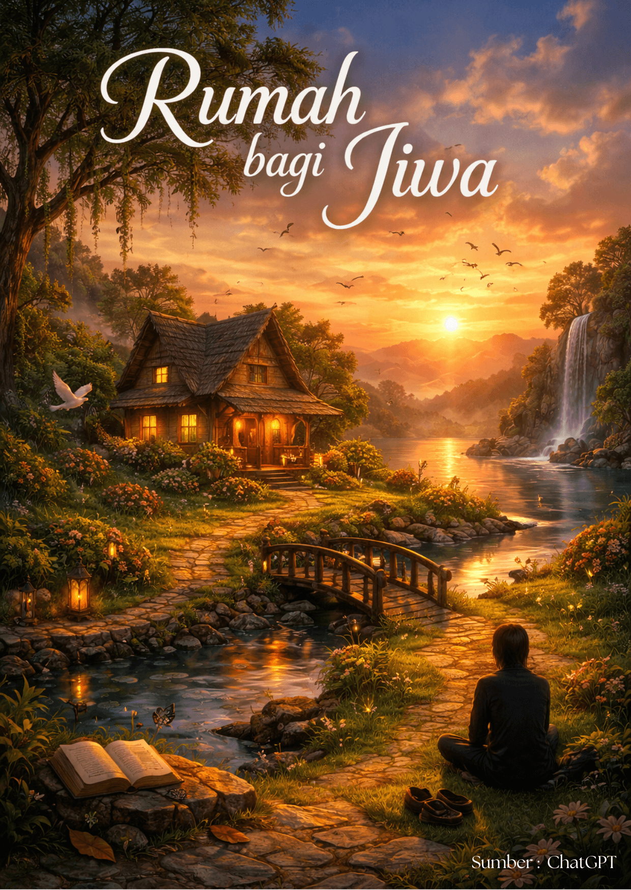
Dirumah sederhana penuh cerita,
Kita belajar arti tawa dan luka,
Diantara pagi dan malam yang setia,
Keluarga menjadi pelabuhan jiwa.
Ayah dengan pengambilan keputusan yang tepat,
Ibu dengan doa yang tak pernah pudar,
Dalam peluk kasih yang sabar,
Kami tumbuh meski dunia berputar.
Saudara adalah tempat cerita,
Teman bertengkar juga berbagi bahagia,
Meski berbeda mimpi dan suara,
Hati kami tetap satu bahasa.
Saat badai datang tanpa aba-aba,
Keluarga berdiri saling menjaga,
Tempat aman yang menjadi tempat pulang bagi kita,
Karena harapan selalu ada.
Keluarga bukan sekedar nama,
Ia adalah cinta yang nyata,
Tempat pulang, tempat percaya,
Selamanya rumah bagi jiwa.
Kita dipisahkan jarak yang tak mudah dilalui
Namun hatiku tetap memilihmu setiap hari
Meski hanya lewat pesan mu selalu kurasai
Kenangannya selalu ku rasai dan hargai
Rindu datang pelan saat malam mulai sepi
Aku menunggu kabarmu seperti menunggu pagi
Walau waktu berbeda, aku tetap di sini
Menyimpan namamu dalam hati yang sunyi
Kadang aku ingin kamu ada di sampingku nanti
Bukan hanya bayangan di layar kecil inii
Aku ingin tertawa bersamamu tanpa henti
Bukan sekadar mimpi yang datang lalu pergi
Perjalanan ini panjang, tapi aku tak lari
Meski jarak sering membuat hati bersedih lagi
Aku percaya suatu saat kita akan bertemu pasti
Karena cinta sejati tak berhenti di sini
Suatu hari nanti kita tak lagi menanti
Semua rindu berubah jadi peluk yang abadi
Dan kisah kita akan terus bersinar kembali
Menjadi cinta yang menang melawan sepi
Diantara Sunyi yang tak mampu ku sebut namanya.
Aku meraba jejakmu dengan denyut waktu perlahan.
angin membawa doa-doa yang gugur dari dada manusia
dan langit menjadi kitab luas tempat rahasiamu ku kagumkan
Engkau hadir tanpa suara namun menggetarkan semua kesadaran
dalam detak jantung, dalam napas yang sering kamu lupakan.
Aku Mencarimu Dibawah tanya dan ragu yang berlapisan.
lalu menyadari bahwa engkau lebih dekat dengan pikiranku sendirian
Ketika gelap menutup mata dan harapan terasa rapuh.
namamu menjadi cahaya yang diam-diam menegakkan langkah
aku belajar berserah diantara bangkit dan jatuh.
sebab kasihmu menampung kelemahan manusia tak pernah letih
Dalam luka dunia yang penuh tangis dan perpecahan.
Engkau tetao menabur makna pada peristiwa pahit yang engkau berikan
aku membaca kehendakmu melalui sabar dan keikhlasan
yang tumbuh pelan-pelan seperti tumbuhan di tanah ujian.
Pada akhirnya aku kembali sebagai hamba yang sederhana
membawa doa yang tak sempurna namun jujur sepenuh jiwa,
di hadapanmu aku belajar menjadi orang yang bersyukur meskipun sederhana
karena kehidupan adalah perjalanan pulang menuju cahaya.
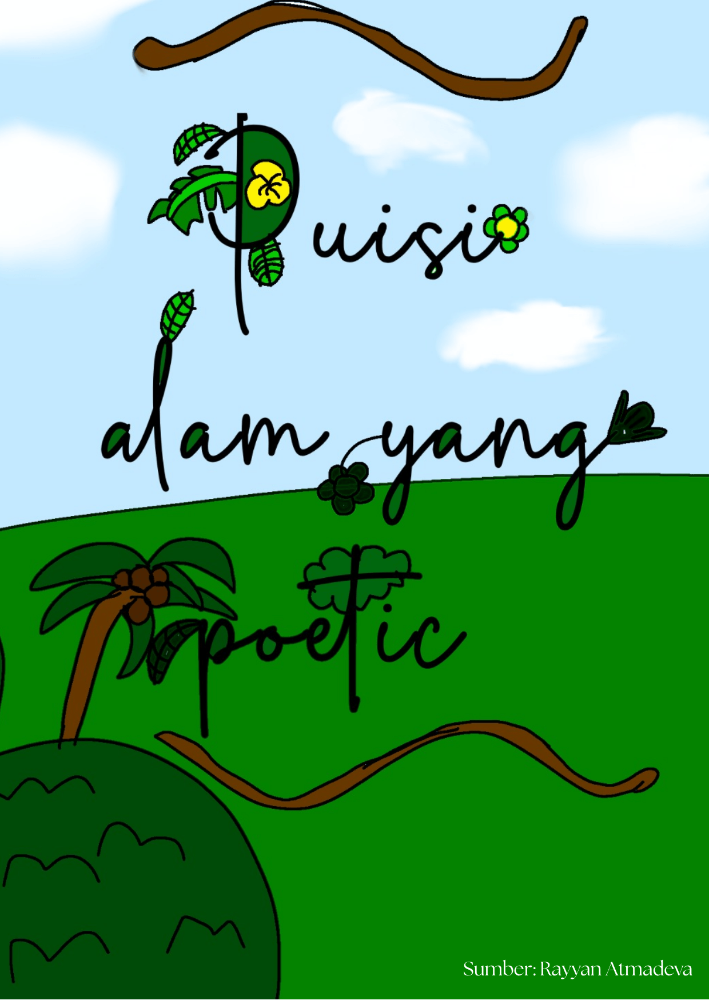
Pagi hari yang tertutup kabut
Sambil melihat bunga yang tercabut
Menatap dengan tatapan merenung
Disertai langit yang mendung
Peperangan membuat kelaparan
Petani pun kekurangan pangan
Stok makanan mulai menipis
Membuat tenaga jadi terkikis
Manusia bisa mati karena haus
Tetapi juga karena terbawa arus
Hal yang awalnya manis
Kadang hal yang sangat sadis
Tertawa bisa dengan mudah mengukir
Dikarenakan luka yang mengiring
Merintih dengan sedih dan meringis
Di tengah-tengah hujan yang gerimis
Manusia minum air karena haus
Hewan juga minum karena haus
Mungkin engkau bertanya apa pertanyaannya
Jawabannya adalah, manusia pembedanya
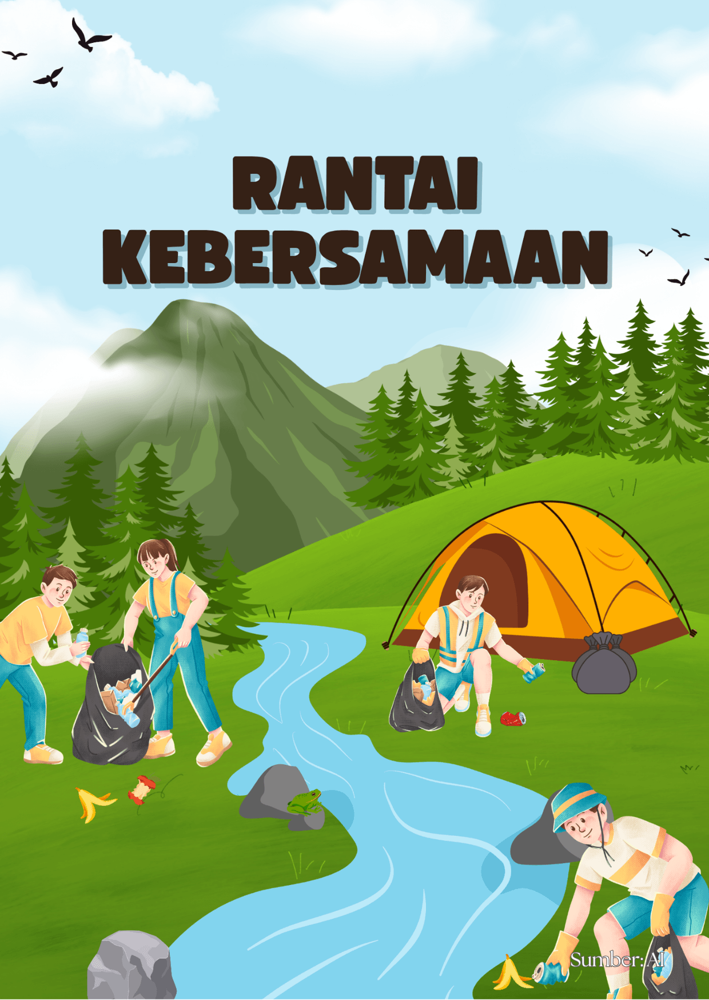
Kita tidak terikat oleh kata
tapi oleh tawa dan air mata bersama
saat lelah, kau selalu ada
saat senang kau menjadi teman cerita
Setiap orang berbeda
namun tetap saling menjaga
jika satu terjatuh yang lain datang membela
agar kita semua maju bersama
Waktu boleh menjauhkan kita
namun ikatan ini tak mudah sirna
karena teman bukan hanya sebutan
melainkan hubungan yang selalu bertahan
Kita melangkah tanpa merasa sendiri
Karena ada tawa di setiap hari
Dalam susah maupun bahagia
Kita tetap bersama selamanya
Bukan karena janji atau kata indah
Tapi karena setia yang tak pernah lelah
Selama waktu terus berjalan
Persahabatan ini tetap bertahan
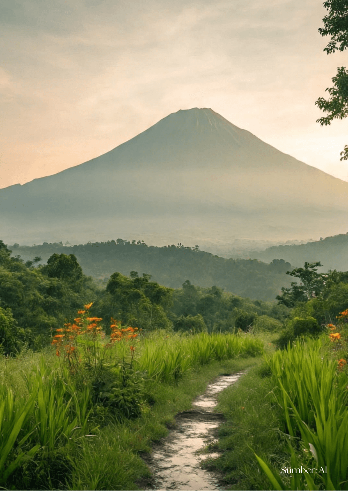
Mereka pergi bertamasya
untuk menghabiskan waktu
Rintik air berjatuh di kaca
hujan bersemi membasu
Mereka menghibur dengan pemandangan alam
Mata mereka melihat Keindahan gunung merapi
Mata mereka melihat laut yang dalam
Mata Mereka melihat pantai
Mereka pergi beristirahat
angin sejuk dari luar
menyuruh tubuh berehat
pagi membangunkan mereka dari tidur
Mereka pergi ke taman
Menikmati udara dan pemandangannya
Mereka berenang di pemandian
Menyehatkan tubuh mereka
Mereka membeli oleh-oleh
Mereka bersiap-siap pulang
Mereka pulang ke rumah
Membawa kenangan sebelum berpaling
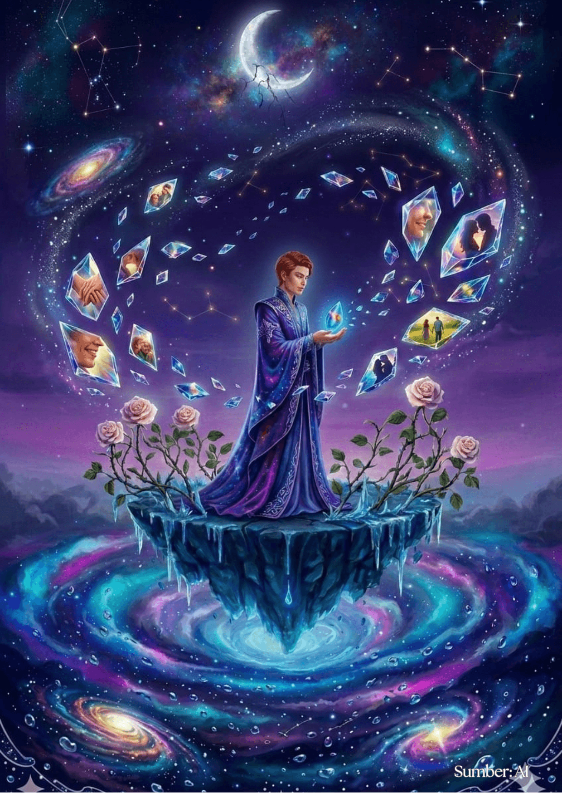
Andai hal itu bisa diulangi lagi
Damba hati ingin bersua denganmu
Seandainya aku menyadari keberadaanya saat itu
mungkin hal ini tidak akan pernah terjadi di hidupku
Dahulu pelangi melukis di dada
Setiap kata menjadi nada yang manja
Kini langitnya hanya kelabu saja
Hampa merayap di sela-sela sukma
Kau bicara tentang rindu yang membara
Namu hatiku diam tak punya suara
Bagaikan bara kehilangan api
Hanya tersisa abu yang sunyi sepi
Tak ada benci, tak ada lagi cemburu
Hanya kekuasaan yang membeku biru
Sentuhanmu terasa bagai angin lalu
Hadirmu tak lagi mampu membelenggu
Pernah ku coba mencari sisa rasa,
Dibalik kenangan yang kian tersiksa
Tapi pintu hati telah terkunci rapat
Cinta yang dulu indah kini tak lagi memikat
Maafkan aku yang tak lagi peduli
Bukan sengaja ingin mengingkari janji
Hanya saja di dalam dada yang gersang
Rasa itu telah lama terbang melayang
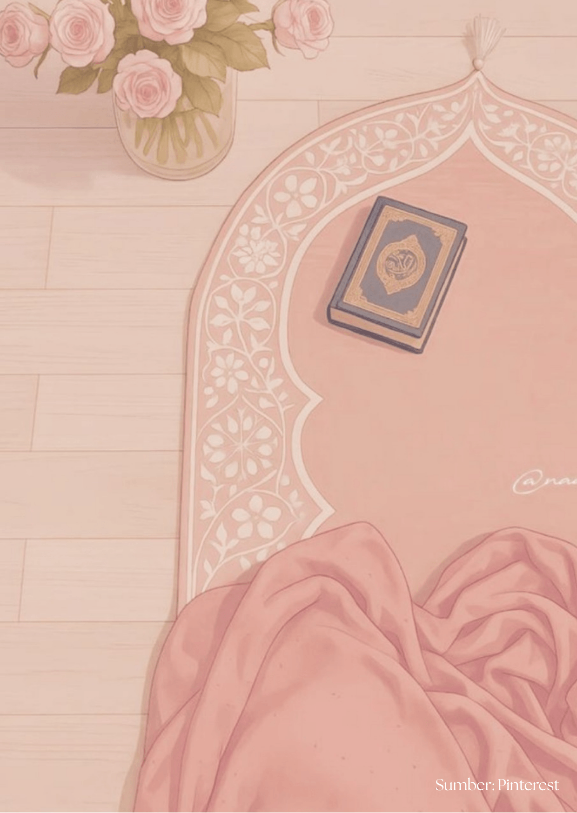
Gelap di heningnya malam yang sunyi,
Kutundukkan kepala sepenuh hati.
Mengingat dosa yang tak terperi,
Memohon ampun pada Ilahi,
Agar hati kembali suci.
Tangan gemetar terbuka menadah doa,
Di atas sajadah terbentang penuh noda.
Air mata menetes perlahan saja,
Mengingat umur yang terbuang sia-sia.
Dunia hanyalah permainan sementara,
Tempat singgah melepaskan dahaga.
Seringkali aku terlena huru-hara,
Melupakan sujud dan perintah agama.
Jalan hidup penuh rintangan,
Kadang aku jatuh dalam kebingungan.
Namun, cahaya-Mu memberi harapan,
Menuntun jiwa menuju kemenangan.
Ya Rabbi... Sang Pemilik jiwa raga,
Hanya kepada-Mu aku meminta.
Terangi jalan di kegelapan dunia,
Hingga akhir hayat aku menutup mata,
Dalam pelukan kasih dan rida.